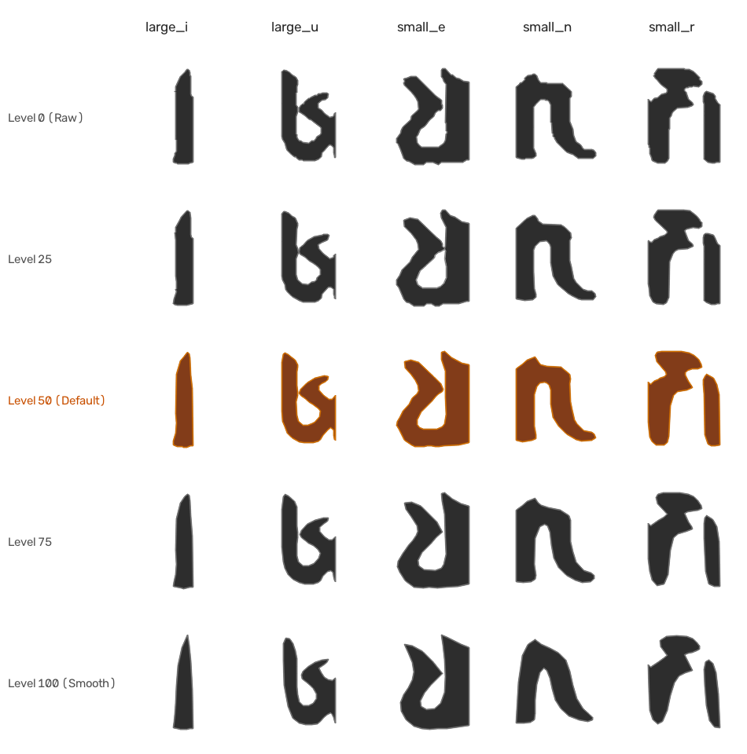
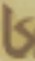
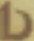
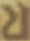
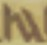
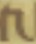
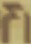
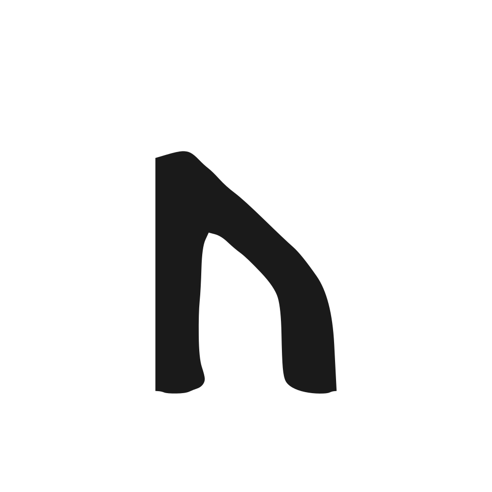

下のテキストボックスに入力した文字が、生成された第四世界フォントで表示されます。
※素材がない文字は指示通り「空白」として表示されます（エラーやトーフにはなりません）。
コマンド実行時に --smooth [0〜100] を指定することで、お好みの寄せ具合でフォントを再生成できます。

※画像素材（data/*.jpg, png）が追加されると、自動的にベクター変換され「作成済」に切り替わります。
| 文字 | 種別 | 状態 | 元画像 (data/) | 二値化マスク | 生成SVG | TTFレンダリング | メトリクス |
|---|---|---|---|---|---|---|---|
| A | 大文字 | 素材待ち (空白) | - | - | - | (Adv:500) | |
| B | 大文字 | 素材待ち (空白) | - | - | - | (Adv:500) | |
| C | 大文字 | 素材待ち (空白) | - | - | - | (Adv:500) | |
| D | 大文字 | 素材待ち (空白) | - | - | - | (Adv:500) | |
| E | 大文字 | 素材待ち (空白) | - | - | - | (Adv:500) | |
| F | 大文字 | 素材待ち (空白) | - | - | - | (Adv:500) | |
| G | 大文字 | 素材待ち (空白) | - | - | - | (Adv:500) | |
| H | 大文字 | 素材待ち (空白) | - | - | - | (Adv:500) | |
| I | 大文字 | 作成済 | I | 136x669 (Adv:236) | |||
| J | 大文字 | 素材待ち (空白) | - | - | - | (Adv:500) | |
| K | 大文字 | 素材待ち (空白) | - | - | - | (Adv:500) | |
| L | 大文字 | 素材待ち (空白) | - | - | - | (Adv:500) | |
| M | 大文字 | 素材待ち (空白) | - | - | - | (Adv:500) | |
| N | 大文字 | 素材待ち (空白) | - | - | - | (Adv:500) | |
| O | 大文字 | 素材待ち (空白) | - | - | - | (Adv:500) | |
| P | 大文字 | 素材待ち (空白) | - | - | - | (Adv:500) | |
| Q | 大文字 | 素材待ち (空白) | - | - | - | (Adv:500) | |
| R | 大文字 | 素材待ち (空白) | - | - | - | (Adv:500) | |
| S | 大文字 | 素材待ち (空白) | - | - | - | (Adv:500) | |
| T | 大文字 | 素材待ち (空白) | - | - | - | (Adv:500) | |
| U | 大文字 | 作成済 |  |
U | 376x633 (Adv:476) | ||
| V | 大文字 | 素材待ち (空白) | - | - | - | (Adv:500) | |
| W | 大文字 | 素材待ち (空白) | - | - | - | (Adv:500) | |
| X | 大文字 | 素材待ち (空白) | - | - | - | (Adv:500) | |
| Y | 大文字 | 素材待ち (空白) | - | - | - | (Adv:500) | |
| Z | 大文字 | 素材待ち (空白) | - | - | - | (Adv:500) |
| 文字 | 種別 | 状態 | 元画像 (data/) | 二値化マスク | 生成SVG | TTFレンダリング | メトリクス |
|---|---|---|---|---|---|---|---|
| a | 小文字 | 素材待ち (空白) | - | - | - | (Adv:450) | |
| b | 小文字 | 素材待ち (空白) | - | - | - | (Adv:450) | |
| c | 小文字 | 素材待ち (空白) | - | - | - | (Adv:450) | |
| d | 小文字 | 作成済 |  |
d | 407x493 (Adv:507) | ||
| e | 小文字 | 作成済 |  |
e | 368x483 (Adv:468) | ||
| f | 小文字 | 素材待ち (空白) | - | - | - | (Adv:450) | |
| g | 小文字 | 素材待ち (空白) | - | - | - | (Adv:450) | |
| h | 小文字 | 素材待ち (空白) | - | - | - | (Adv:450) | |
| i | 小文字 | 素材待ち (空白) | - | - | - | (Adv:450) | |
| j | 小文字 | 素材待ち (空白) | - | - | - | (Adv:450) | |
| k | 小文字 | 素材待ち (空白) | - | - | - | (Adv:450) | |
| l | 小文字 | 作成済 | l | 377x491 (Adv:477) | |||
| m | 小文字 | 作成済 |  |
m | 495x437 (Adv:595) | ||
| n | 小文字 | 作成済 |  |
n | 401x432 (Adv:501) | ||
| o | 小文字 | 作成済 | o | 343x473 (Adv:443) | |||
| p | 小文字 | 素材待ち (空白) | - | - | - | (Adv:450) | |
| q | 小文字 | 素材待ち (空白) | - | - | - | (Adv:450) | |
| r | 小文字 | 作成済 |  |
r | 363x480 (Adv:463) | ||
| s | 小文字 | 作成済 |  |
s | 368x493 (Adv:468) | ||
| t | 小文字 | 素材待ち (空白) | - | - | - | (Adv:450) | |
| u | 小文字 | 素材待ち (空白) | - | - | - | (Adv:450) | |
| v | 小文字 | 素材待ち (空白) | - | - | - | (Adv:450) | |
| w | 小文字 | 素材待ち (空白) | - | - | - | (Adv:450) | |
| x | 小文字 | 素材待ち (空白) | - | - | - | (Adv:450) | |
| y | 小文字 | 素材待ち (空白) | - | - | - | (Adv:450) | |
| z | 小文字 | 素材待ち (空白) | - | - | - | (Adv:450) |
| 文字 | 種別 | 状態 | 元画像 (data/) | 二値化マスク | 生成SVG | TTFレンダリング | メトリクス |
|---|---|---|---|---|---|---|---|
| 0 | 数字 | 素材待ち (空白) | - | - | - | (Adv:500) | |
| 1 | 数字 | 素材待ち (空白) | - | - | - | (Adv:500) | |
| 2 | 数字 | 素材待ち (空白) | - | - | - | (Adv:500) | |
| 3 | 数字 | 素材待ち (空白) | - | - | - | (Adv:500) | |
| 4 | 数字 | 素材待ち (空白) | - | - | - | (Adv:500) | |
| 5 | 数字 | 素材待ち (空白) | - | - | - | (Adv:500) | |
| 6 | 数字 | 素材待ち (空白) | - | - | - | (Adv:500) | |
| 7 | 数字 | 素材待ち (空白) | - | - | - | (Adv:500) | |
| 8 | 数字 | 素材待ち (空白) | - | - | - | (Adv:500) | |
| 9 | 数字 | 素材待ち (空白) | - | - | - | (Adv:500) |
| 文字 | 種別 | 状態 | 元画像 (data/) | 二値化マスク | 生成SVG | TTFレンダリング | メトリクス |
|---|---|---|---|---|---|---|---|
| ! | 記号 | 素材待ち (空白) | - | - | - | (Adv:300) | |
| ? | 記号 | 素材待ち (空白) | - | - | - | (Adv:500) | |
| - | 記号 | 素材待ち (空白) | - | - | - | (Adv:400) |